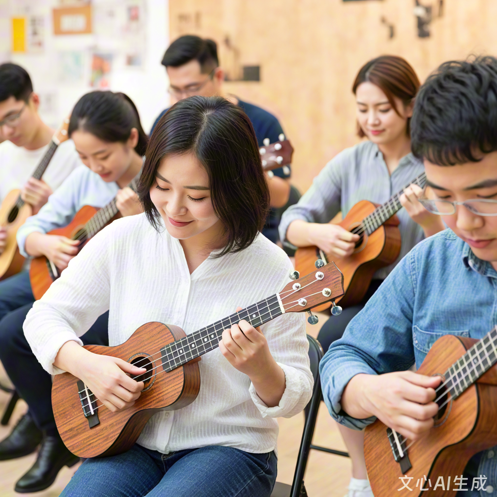

校园尤克里里社 2025 年招新
社团简介|
活动安排|
风采展示|
社员故事|
在线报名
社团简介
1. 社团定位与核心理念
尤克里里社成立于2018年，是校园内最具活力的轻型乐器社团之一。我们以“让音乐触手可及”为宗旨，致力于推广尤克里里文化，打造一个零门槛、高包容性的音乐社区。无论你是零基础小白、进阶玩家，还是渴望创作的音乐人，这里都能找到属于你的舞台。
2. 乐器特色与文化背景
尤克里里（Ukulele）源自夏威夷，因其小巧便携、音色温暖明亮，被誉为“世界上最快乐的乐器”。它仅有四根弦，和弦指法简单易学，却能演绎流行、民谣、爵士甚至古典等多种风格。社团通过融合夏威夷文化（如草裙舞、Hapa-Haole歌曲）与现代音乐趋势，让传统乐器焕发新生。
3. 社团架构与资源支持
指导老师：特邀音乐学院教师定期授课，提供专业技法指导；
设备资源：社团拥有50余把尤克里里（含23寸、26寸不同型号），供成员免费借用；
创作平台：配备录音设备、音频剪辑软件，支持成员录制原创作品；
合作网络：与本地手作工坊、Livehouse、夏威夷文化中心建立长期合作。
4. 社团影响力
连续三年获评“校园十佳社团”，累计培养成员超300人；
原创作品《四弦诗》获省级大学生音乐节“最佳创意奖”；
快闪活动视频全网播放量突破50万次，被多家媒体报道。
5. 加入我们，你将获得
技能提升：从基础弹唱到指弹技巧，系统化课程助你快速成长；
创作自由：鼓励改编热门歌曲、为诗歌配乐，甚至尝试原创编曲；
社交拓展：结识志同道合的伙伴，共同参与校园演出、跨校交流；
文化体验：深入学习夏威夷音乐历史，参与草裙舞、乐器制作等工作坊。
返回顶部
活动安排
| 尤克里里社2025年春季学期活动安排表 |
| 日期 |
时间 |
活动名称 |
地点 |
| 3月5日 |
18:30-20:00 |
新成员见面会 |
音乐楼101教室 |
| 3月7日 |
18:30-20:30 |
尤克里里乐器基础教学公开课 |
| 3月14日 |
18:30-21:00 |
尤克里里进阶课程 |
音乐楼205教室 |
| 3月21日 |
18:30-21:00 |
指弹尤克里里技巧工作坊 |
音乐楼302教室 |
| 3月28日 |
18:30-20:30 |
乐队组合训练 |
音乐楼排练室A |
| 4月4日 |
18:30-21:00 |
尤克里里效果器应用课程 |
音乐楼205教室 |
| 4月11日 |
18:30-20:00 |
音乐制作基础讲座 |
计算机楼105机房 |
| 4月18日 |
18:30-21:00 |
春季音乐会筹备会 |
音乐楼101教室 |
| 4月25日 |
18:30-21:00 |
即兴演奏训练营 |
音乐楼302教室 |
| 5月2日 |
18:30-21:00 |
春季音乐会彩排 |
学生活动中心大礼堂 |
| 5月9日 |
18:30-22:00 |
春季音乐会正式演出 |
学生活动中心大礼堂 |
2. 季度主题活动（每学期2-3次）
春季（3-5月）：夏威夷文化季
活动1：草裙舞与尤克里里工作坊
邀请夏威夷文化研究者，教授传统舞蹈动作与Slack-key指法，成员分组编排融合表演。
活动2：四弦诗会
结合诗歌朗诵与尤克里里伴奏，鼓励成员为原创诗歌创作配乐，评选“最佳诗意表达奖”。
活动3：校园快闪行动
在食堂、图书馆等场景突然演奏，录制路人反应视频，增强传播力。
夏季（6-8月）：创作与表演季
活动1：流行音乐改编大赛
选取热门歌曲（如《孤勇者》《起风了》），重新编排尤克里里版本，录制多轨音频并制作混剪视频。
活动2：跨校联盟赛
联合周边高校社团举办线上弹唱大赛，设置“原创作品奖”“最佳改编奖”，优秀作品入选年度合辑。
活动3：露天音乐会
在操场举办夏日音乐会，成员自由组队表演，设置“观众点歌”“即兴合奏”环节。
秋季（9-11月）：技能突破季
活动1：指弹技巧特训营
邀请专业演奏家开展3天集训，重点突破《Cannon in D》《While My Guitar Gently Weeps》等高难度曲目。
活动2：乐器制作工坊
与本地手作工坊合作，成员亲手打磨琴身、安装琴弦，刻制个性化图案，制作专属尤克里里。
活动3：音乐纪录片观影会
观看《尤克里里：夏威夷之声》《寻找小糖人》，结合乐器史讲解文化背景，展开讨论。
冬季（12-2月）：温暖治愈季
活动1：冬日暖歌分享会
成员围坐弹唱温暖治愈系歌曲（如《Let It Be》《平凡之路》），分享音乐背后的故事。
活动2：线上云合奏
录制分轨音频，合成多人合奏视频，为异地校友送去祝福。
活动3：年度颁奖典礼
表彰“最佳进步奖”“最具创意奖”“最佳团队奖”，回顾全年精彩瞬间。
返回顶部
风采展示

1. 演出瞬间：舞台上的高光时刻
校园音乐节：2024年“夏夜四弦”专场演出，成员改编的《青花瓷》尤克里里版引发全场大合唱；
跨校联盟赛：与XX大学联合举办的“四弦争霸赛”中，社团原创作品《四弦诗》获“最佳原创奖”；
快闪行动：在食堂门口突然演奏《彩虹云朵》，路人纷纷加入合唱，视频播放量超10万次。
2. 创作成果：从模仿到超越
改编作品：将《孤勇者》改编为尤克里里指弹版，加入非洲鼓伴奏，视频被原唱陈奕迅点赞；
原创歌曲：成员创作的《四弦日记》记录社团生活，入选校园原创音乐榜单TOP10；
混剪视频：将多次演出片段剪辑成《四弦的四季》，获省级大学生微电影节“最佳音乐短片”。
3. 文化融合：传统与现代的碰撞
夏威夷文化日：成员身着草裙，用尤克里里演奏传统Hapa-Haole歌曲，体验夏威夷风情；
诗歌音乐会：与文学社合作，为原创诗歌《四弦的梦》创作配乐，实现文学与音乐的跨界；
乐器DIY：在手作工坊制作的尤克里里上刻下“四弦同心”，成为社团标志性纪念品。
4. 社员成长：从零基础到舞台王者
小A的蜕变：入学时连和弦都按不稳，通过3个月系统训练，成为乐队主奏；
小B的创作路：从改编热门歌曲到尝试原创，其作品《四弦的夜》被选为社团主题曲；
团队的凝聚力：跨校比赛中，成员自发组织加练，最终以0.5分优势夺冠，赛后相拥庆祝。